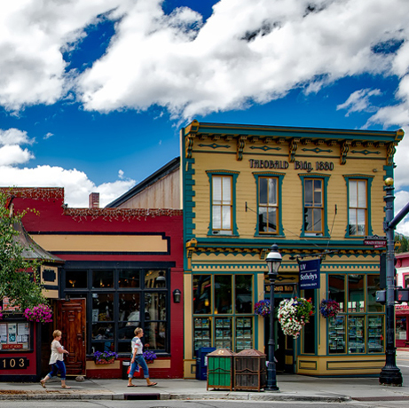

For an accurate and waterproof forecast when you need it.
THE CITY OF GREENVILLE

TODAY'S WEATHER
What To Expect:
Currently: °F
Today's High: °F
Today's Low: °F
Precipitation:
Wind Speed: mph
10 DAY FORECAST
Day 1
Day 2
Day 3
Day 4
Day 5
Day 6
Day 7
Day 8
Day 9
Day 10
89°F
87°F
78°F
75°F
72°F
72°F
79°F
83°F
85°F
89°F
NO SNOW FOR GREENVILLE
February is coming to a close with temperatures in the 60s and much of the area has yet to see any snow. In Greenville, the lack of snow is causing some businesses trouble, but others are benefitting from the mild winter. For the Town’s street crew, you might think the lack of snow is saving money on snowplowing and sanding costs. That may be true, but the Town is spending road dollars on repair projects they don’t normally work on this time of year. “It’s kind of weird, because we’re doing a lot more road work that we normally don’t do. It’s been a crazy year,” said Public Works Director Matt Patterson. “The roads are still kind of busy out there right now and usually, by this time of year, it’s slowed down. Yeah, it’s actually hurt our budget, because I’m using what I had saved up for next fall season to do some repairs now. It’s a little cold for asphalt right now, but we’re still doing drainage and culvert replacements and crack sealing, when we’d normally this time of year, be doing snowplowing and end-of-the-year maintenance in the shop,” he explained. Patterson noted that contractors are probably having similar thoughts. He said he saw a new house going up the other day and asked, “How often do you see houses being built in the winter-time?” Patterson is onto something. The weather has allowed work on housing construction projects to continue.